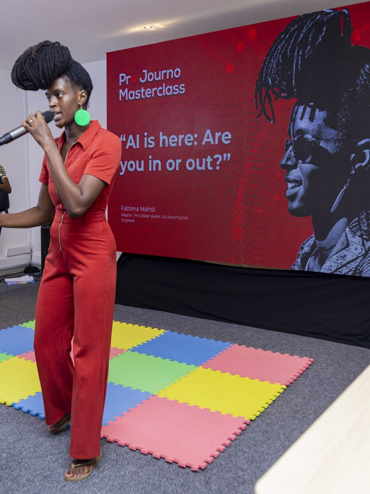
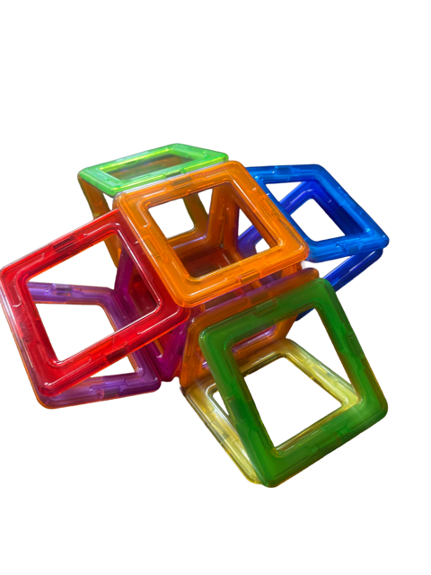

In May 2025 I designed and delivered an AI masterclass for 50+ professionals in Tanzania, most of them new to generative AI. I don’t like to talk at people, so I always opt for interactive games and activities that get people involved and teach through play.
Before AI: counselling, mentoring and group facilitation with young people in Panama, Malta and London.

Beginners are often shown which buttons to press without learning why AI responds the way it does. My aim was for the room to understand how AI responds to information and instructions, and to leave confident they could work out their own prompts.
Puzzle mats on the floor become a grid with one hidden path. Teams step through one mat at a time, and I can only say “correct” or “incorrect”. Even though nobody saw the path, through trial and error they were able to find it.
Pick a mat on the bottom row to step on.
“AI doesn’t understand things the way we do. It learns patterns from huge numbers of examples, then predicts what’s most likely to come next.”
Four teams get the same magnetic tiles and three minutes to build this bot, but each team gets different information. Then we compare the builds, before any prompting has been taught.
Text Prompt: Build a geometric shape
Start with a cube made from 6 blank square faces — like a cardboard box. On each of the 4 vertical sides (not top or bottom), place two flat square shapes. Arrange the two squares on each face so they are angled inward diagonally, with their points facing toward the centre of the cube’s face (like two triangles touching tips). Repeat this exact square arrangement on the remaining three vertical sides of the cube. Do not place any shapes on the top or bottom of the cube.

“Your Input = The Output.” “Better prompts = better answers.”
Teams piece together PRO sentence cards until someone spots the pattern. Only then does the framework get its name.
Who the AI should be. “You are a…”
Who the AI is helping, and their situation. “Act like you’re helping someone who is…”
How the answer should be explained or set out. “Explain it…”
“You don’t just tell AI what to do — you guide how it does it.”
The last 20 minutes are individual. Each person works through four prompts in ChatGPT, each building on the one before, while I walk the room coaching one to one.
“What’s a business idea you’ve always had but never pursued?”
Write it down. Don’t just think it. This could be the first step to building it. We’ll discuss after the break.
Prompts 3 and 4 have been reworded since the session so nothing reads as a promise of income: learners are asked to test ideas and be realistic about the effort.
The original session materials, lightly edited for this portfolio. I used a Custom GPT I had built to brainstorm and structure the session. I delivered it as Fattima Mahdi; I have since married.